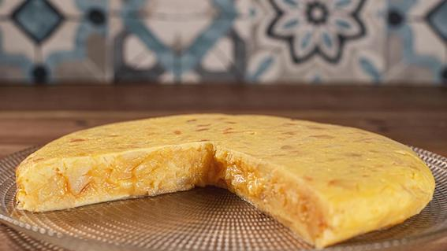

Tortilla

Description
Tortilla de patatas, also known as tortilla española, tortilla, or in English as Spanish omelet, is a staple in the kitchen of any Spanish home cook. Each household has their go-to recipe: some prefer their tortilla runny, while others like it cooked through. It has 2 simple ingredients: eggs and potatoes. Onion is an optional ingredient but I consider it essential. So in this recipe I’m going to show you the Spanish omelet how I like it: runny and with onions.
Ingredients
- 750 grams potatoes
- 1 medium brown onion
- 6 free-range medium egss
- 1L sunflower oil
Steps
- Peel the potatoes and slice them in half lengthwise. Then, slice them into 0.5 cm thin slices. If the potatoes are very big, you can quarter them lengthwise
- Heat enough olive oil in a pan to cover all the potatoes and poach them on a medium-low fire until the potatoes are cooked (about 30 minutes).
- While cooking the potatoes, chop the onions finely and fry them on a separate pan on a low fire until they are lightly caramelised (about 20 minutes).
- Drain both the potatoes and the onions and save the oil from cooking the potatoes for another time.
- Beat the eggs lightly with a spoon and add the potatoes and beaten eggs. Mix thoroughly and add salt to taste. Leave to rest for 10 minutes.
- Heat a little bit of olive oil on a non-stick pan on a high fire. When hot, add the potato, onion and egg mixture and, immediately, lower the fire to low or medium-low.
- Cook for 2-3 minutes and turn the omelette. Cook for an extra 2 minutes, leave to rest for 10 minutes and serve.
Back to Main Page